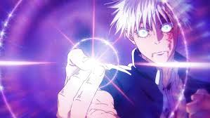
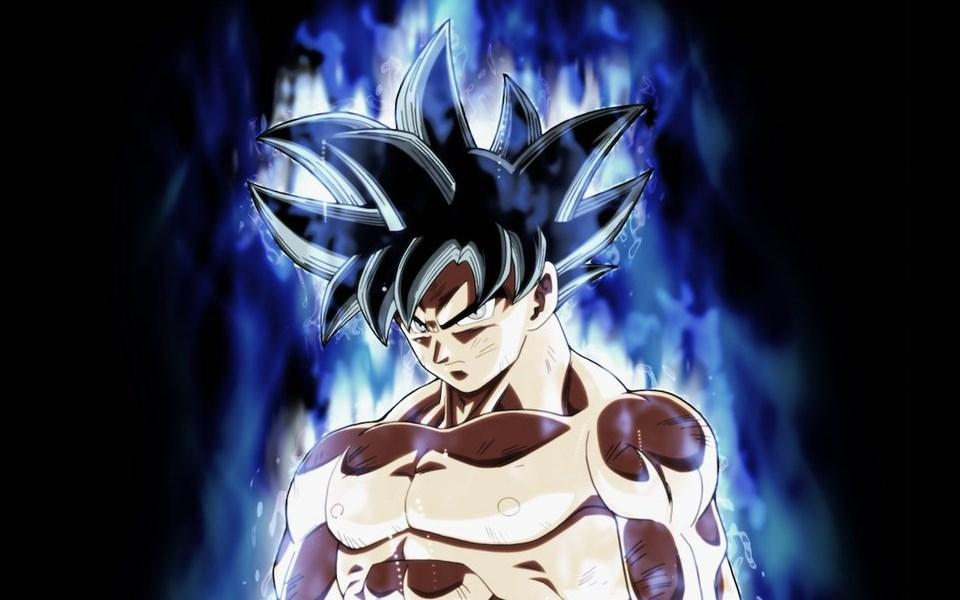
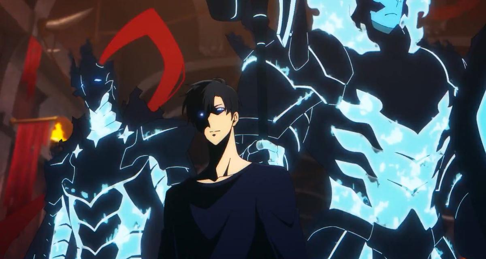
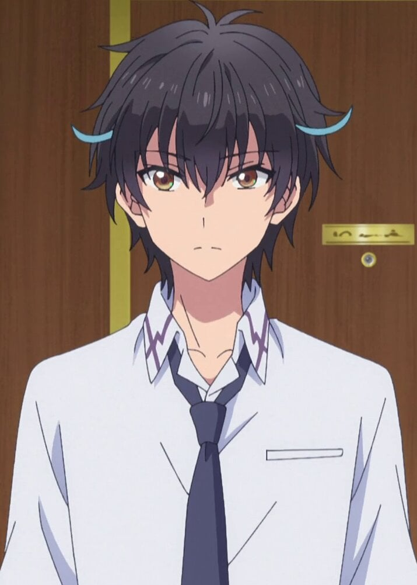

Rimuru Tempest is a man who was formerly known as Mikami Satoru, a regular office worker who met an unexpected end after being stabbed by a purse snature.
Upon death, he was reincarnated into another world as a slime, a form that gave him the ability to absorb powers and evolve rapidly. With guidance from his skill Great Sage,
Rimuru beganhis rise to power, absorbing countless abilites and defeating powerful foes along the way. Although he's a pacifist he doesn't shy away from battle when needed.
In this challenge, we'll pit Rimuru against four formmidable opponents to see who truly stands at the top. Welcome to the Rimuru Tempest Battle Challenge!
Rimuru's opponents

gojo Satoru

Son Goku

Sung Jin Woo

Yogiri Takatou
A quick look at our fighters Strengths!
Rimuru's Ultimate skills
Azathoth, God of the Void
Raphael (Wisdom): Analysis, strategy, appraisal, and knowledge management.
Beelzebuth (Gluttony): Predation, absorption, storage, and digestion of powers and souls.
Imaginary Space & Spatial Control: Infinite storage, dimension manipulation, and instant movement.
Spacetime & Law Domination: Control over physics, time, space, and reality itself.
True Dragon Integration [Storm・Scorch]: Harnesses Storm & Scorch Dragon cores for elemental and draconic power.
Shub-Niggurath, Lord of Harvest
Skill replication, gifting, and creation
Empowerment through allies (via Food Chain)
Rimuru's Strategic & Analytical Powers Abilites
Parallel Processing & Thought Acceleration: Can simulate thousands of scenarios instantly
Skill Creation & Customization: Adapts or evolves skills mid-battle to overcome enemies
Memory Transfer & Resurrection: Even in death, can reincarnate with full memory and abilities